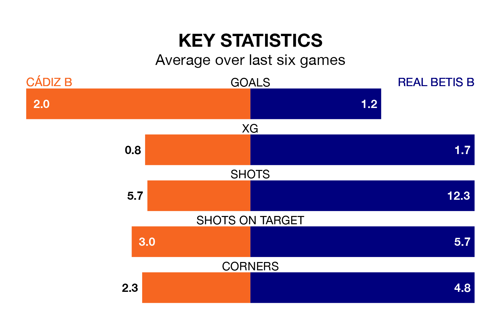

Both Cádiz B and Real Betis B will be looking to extend their unbeaten runs on Saturday.
The two sides have gone five Segunda División RFEF Group 4 matches since they last lost – during which Cádiz B have won three and drawn two, and Betis B have taken two wins and three draws.
With 24 goals in 17 games so far this season, Betis B are the league's second-highest scorers with 1.4 goals per game. And they are conceding fewer than average, letting in 17 goals at a rate of 1.0 per game.
Cádiz B are also above average scorers, with 1.2 goals per game, compared to a league average of 1.1. They have conceded 1.4 goals per game.
In the last three years, Cádiz B and Betis B have played each other on three occasions. Betis B won two of them and they drew once.
Their last meeting was on September 3, when Betis B won 2-1 at home.
The home side are 11th in the table after 17 games, of which they have won six and drawn five, earning 23 points.
The visitors are three places ahead of Cádiz B in eighth, with six wins and seven draws putting them on 25 points.
Cádiz B's last match was on Sunday, a 3-1 win against La Unión Atlético.
Betis B drew 1-1 with Union Estepona CF last time out, also on Sunday.
Updated: 13:38 (UTC), 10/01/24